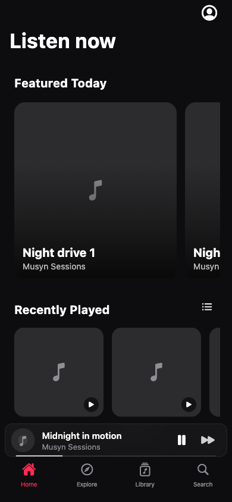
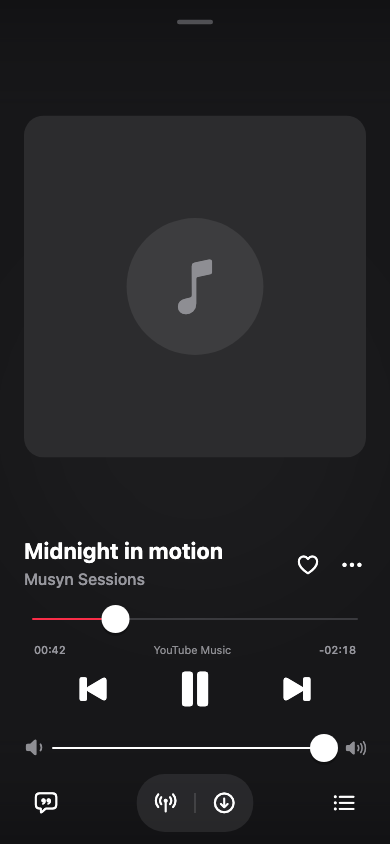
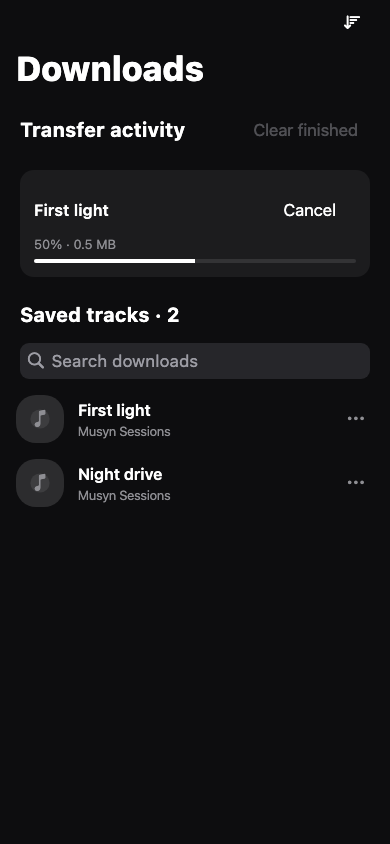

Music, in your rhythm.
One place for your next track. YouTube Music and JioSaavn, a queue you control, lyrics that follow along, and downloads for the way home.
Open source · iOS 15+ · Unsigned IPA · By Voryn Labs
— IPA downloads Loading public release statistics
A little more music. A little less friction.
- Choose your source
- YouTube Music and JioSaavn AAC, with explicit source selection and honest quality choices. No lossless claims.
- Keep the queue yours
- Play next, reorder, shuffle and save your favorites. Open the full player without losing your place.
- Read along
- Synced lyrics follow playback, with line seeking where timestamps are available.
- Go offline
- Track and playlist downloads with progress, cancellation and retry. Search and sort what is saved.
Made to keep the music in view.



Interface previews use fictional tracks and placeholder artwork. They are automated renders, not device playback screenshots.
Your iPhone. Your installer.
Musyn 0.1 is an unsigned preview. Use your own signing identity with a compatible installer, or import the IPA into a compatible LiveContainer version.
One Voryn Labs source includes both Cloudified and Musyn. Add it once to browse both apps in your installer.
Setup and preview notes
-
Download and verify
Get Musyn.ipa and its SHA-256 file from the release. Sign with a compatible installer or import into LiveContainer. AltStore PAL cannot install this unsigned IPA.
-
Open Musyn
Browse music, choose your preferred provider and quality, or connect YouTube Music for account features. A login is optional for general browsing.
-
Save a track
Use its options menu to choose a download source and bitrate. Downloads shows transfer status and saved music.
Manual source URL:
https://voryn-labs.github.io/source.json
App identity: com.vorynlabs.musyn. Physical iPhone playback, background transitions and installer behavior still need device acceptance. Background download resumption is not promised.
Built in the open.
Musyn is maintained by Voryn Labs under GPL-3.0, with credits to the Musify lineage and BitChord design reference. Music providers and artwork owners retain their rights. Availability can vary by source and region.
Explore the source ↗ · Report an issue ↗ · Read the privacy notes
The counter sums public GitHub downloads of Musyn.ipa across published releases. It counts file requests, not people or verified installations. If GitHub is unavailable, no guessed count is shown.